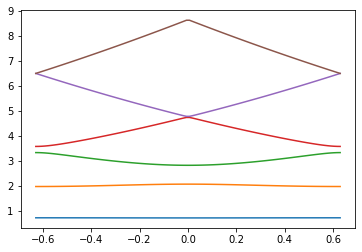
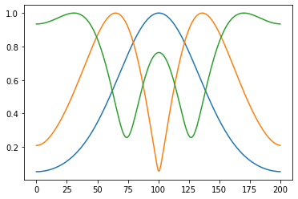
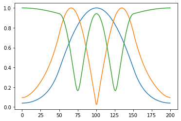
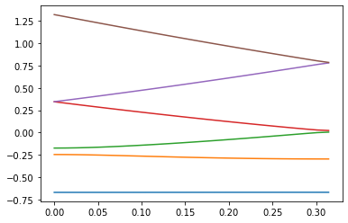
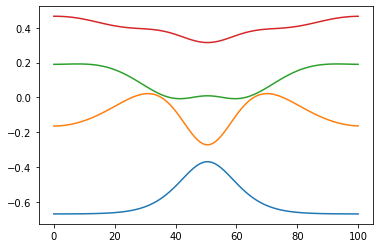

An Intuitive Picture of Band Structure
Contents
1. An Intuitive Picture of Band Structure#
I am following “Calculation of band structures by a discrete variable representation based on Bloch functions” (View online: https://doi.org/10.1119/1.1994858) to make a DVR method for periodic potentials.
import numpy as np
import matplotlib.pyplot as plt
1.1. Using the DVR scheme with periodic boundary conditions#
hbar = 1
mu = 1
# Set these
M=100 # Basis size will be N=2M+1
P=5 # Periodicity
# Determined
xs = np.arange(0, P, P/(2*M+1))
# Build the Hamiltonian
def make_H(kappa, P, M, Vfunc):
N = 2*M+1
Hmat = np.zeros((N,N), dtype=complex)
Delta = P/N
Delta_prime = np.pi/N
omega = 2*np.pi/P
for i in range(N):
for j in range(N):
if i==j:
Hmat[i,j] = (hbar**2/(2*mu)) * (kappa**2 + omega**2 * (M*(M+1))/3) + Vfunc(i*Delta)
else:
factor1 = (-1j*kappa*omega)/(np.sin((i-j)*Delta_prime))
factor2 = omega**2 * np.cos((i-j)*Delta_prime)/(2*np.sin((i-j)*Delta_prime)**2)
Hmat[i,j] = (hbar**2/(2*mu)) * (-1)**(i-j) * np.exp(1j*kappa*(i-j)*Delta) * (factor1+factor2)
return Hmat
def Vfunc(x):
return 1.5 + 1.5*np.cos(2*np.pi*x/P)
H=make_H(0.1, P, M, Vfunc)
vals, vecs = np.linalg.eigh(H)
kappa_vals= np.linspace(-np.pi/P,np.pi/P,100)
bands = np.zeros((6,len(kappa_vals)))
for (nk,kappa) in enumerate(kappa_vals):
Hmat = make_H(kappa, P, M, Vfunc)
vals, vecs = np.linalg.eigh(Hmat)
bands[:,nk] = vals[0:6]
for band_val in range(6):
plt.plot(kappa_vals, bands[band_val,:])

vals, vecs = np.linalg.eigh(make_H(0.2, P, M, Vfunc))
for i in range(3):
plt.plot(np.abs(vecs[:,i])/np.max(np.abs(vecs[:,i])));

Now let’s try more interesting unit cells. Start with the Kronig-Penney model.
def Vfunc(x):
return 3*((np.abs(x) < P/4)|(np.abs(x)>3*P/4))
plt.plot(xs,Vfunc(xs))
[<matplotlib.lines.Line2D at 0x7faa1b7a8220>]
kappa_vals= np.linspace(-np.pi/P,np.pi/P,100)
bands = np.zeros((6,len(kappa_vals)))
for (nk,kappa) in enumerate(kappa_vals):
Hmat = make_H(kappa, P, M, Vfunc)
vals, vecs = np.linalg.eigh(Hmat)
bands[:,nk] = vals[0:6]
for band_val in range(6):
plt.plot(kappa_vals, bands[band_val,:])
(0.0, 1.0)
Also plot the wavefunctions
vals, vecs = np.linalg.eigh(make_H(0.2, P, M, Vfunc))
for i in range(3):
plt.plot(np.abs(vecs[:,i])/np.max(np.abs(vecs[:,i])));

Try the double-well potential that Federico mentioned.
def Vfunc_sym(x):
return -1+ 1*((np.abs(x) < P/8)|(np.abs(x)>3.5*P/8)) + 1*((np.abs(x) < 4.5*P/8)|(np.abs(x)>7*P/8))
def Vfunc_asym(x):
return -1+ 1*((np.abs(x) < 2.5*P/8)|(np.abs(x)>3.5*P/8)) + 1*((np.abs(x) < 4.5*P/8)|(np.abs(x)>7*P/8))
plt.plot(xs,Vfunc_sym(xs))
plt.plot(xs,Vfunc_asym(xs))
[<matplotlib.lines.Line2D at 0x7fb458d60670>]
kappa_vals= np.linspace(0,np.pi/P,25)
bands_sym = np.zeros((6,len(kappa_vals)))
for (nk,kappa) in enumerate(kappa_vals):
Hmat = make_H(kappa, P, M, Vfunc_sym)
vals, vecs = np.linalg.eigh(Hmat)
bands_sym[:,nk] = vals[0:6]
kappa_vals= np.linspace(0,np.pi/P,25)
bands_asym = np.zeros((6,len(kappa_vals)))
for (nk,kappa) in enumerate(kappa_vals):
Hmat = make_H(kappa, P, M, Vfunc_asym)
vals, vecs = np.linalg.eigh(Hmat)
bands_asym[:,nk] = vals[0:6]
colors = plt.rcParams['axes.prop_cycle'].by_key()['color']
for band_val in range(6):
plt.plot(kappa_vals, bands_sym[band_val,:], color=colors[band_val])
plt.plot(kappa_vals, bands_asym[band_val,:],'--', color=colors[band_val])
plt.gca().set_prop_cycle(None)
plt.ylim(0,3)
plt.xlabel("ka")
plt.ylabel("Energy")
plt.title("Solid = symmetric, dashed = asymmetric")
Text(0.5, 1.0, 'Solid = symmetric, dashed = asymmetric')
Also plot the wavefunctions for a particular kappa value
vals, vecs = np.linalg.eigh(make_H(0.352, P, M, Vfunc_sym))
plt.plot(np.abs(vecs[:,2])**2)
[<matplotlib.lines.Line2D at 0x7fb468adddc0>]
And the “soft Coulomb” potential
def V_C(x):
return -1**2/np.sqrt(1**2+(x-10/2)**2)
xs = np.linspace(0,10,100)
plt.plot(xs,V_C(xs))
[<matplotlib.lines.Line2D at 0x7fb47ab80fd0>]
P = 10
M = 50
kappa_vals= np.linspace(0,np.pi/P,25)
bands = np.zeros((6,len(kappa_vals)))
for (nk,kappa) in enumerate(kappa_vals):
Hmat = make_H(kappa, P, M, V_C)
vals, vecs = np.linalg.eigh(Hmat)
bands[:,nk] = vals[0:6]
for band_val in range(6):
plt.plot(kappa_vals, bands[band_val,:])

bands[0:4,[0,-1]]
array([[-0.67028101, -0.66929123],
[-0.24614924, -0.29620133],
[-0.17392269, 0.00475342],
[ 0.34513722, 0.02303324]])
vals, vecs = np.linalg.eigh(make_H(0.157, P, M, V_C))
for i in range(4):
plt.plot(vals[i]+0.3*np.abs(vecs[:,i])**2/np.max(np.abs(vecs[:,i])**2))

1.2. Also try the sinc-basis DVR code and program some “periodic” potentials by hand#
hbar = 1
m = 1
# Function to make the kinetic energy operator
def make_T(x):
Delta_x = x[1]-x[0]
N = x.shape[0]
Tmat = np.zeros((N,N))
# now loop over kinetic energy matrix and fill in matrix elements
for i in range(N):
for j in range(N):
if i==j:
Tmat[i,j] = (hbar**2/(2*m*Delta_x**2)) * (np.pi**2)/3
else:
Tmat[i,j] = (hbar**2/(2*m*Delta_x**2)) * (-1)**(i-j) * 2/(i-j)**2
return Tmat
# Function to make the potential energy operator
def make_V(x,Vfunc):
Vmat = np.zeros((len(x),len(x)))
for i in range(len(x)):
Vmat[i,i] = Vfunc(x[i])
return Vmat
# Function to make the full Hamiltonian
def make_H(x,Vfunc):
return make_T(x) + make_V(x,Vfunc)
N = 900
xs = np.linspace(-4,4,N)
def V_wells(x):
out = 0
if np.abs(x) > 3.0:
out += 200
else:
for n in range(-10,10):
if ((x-0.035) < 0.5*n)&((x+0.035)>0.5*n):
out += 200
return out
plt.plot(xs,[V_wells(xs[i]) for i in range(len(xs))])
[<matplotlib.lines.Line2D at 0x7faa1c7b0e50>]
Ham=make_H(xs,V_wells)
vals, vecs = np.linalg.eigh(Ham)
plt.plot(vals[0:30],'o')
[<matplotlib.lines.Line2D at 0x7faa2a84f8b0>]
for i in range(100):
plt.axhline(vals[i])
plt.plot(xs,[V_wells(xs[i]) for i in range(len(xs))],'k')
plt.ylim(0,300)
(0.0, 300.0)
1.3. Use transfer matrix approach#
m =1
def DMat(k1, k2):
res = np.zeros((2,2),dtype=np.complex_)
res[0,0] = (1 + k2/k1)/2
res[0,1] = (1 - k2/k1)/2
res[1,0] = res[0,1]
res[1,1] = res[0,0]
return res
def PMat(k, L):
res = np.zeros((2,2),dtype=np.complex_)
res[0,0] = np.exp(-1j * k * L)
res[1,1] = np.exp(1j * k * L)
return res
Es = np.arange(0.01, 4.0, 0.0005) #1.6
width_barrier = 0.12
width_gap = 5
Ttrans = np.zeros(Es.size)
i = 0
for E in Es:
klow = np.emath.sqrt(2 * m * E)
khigh = np.emath.sqrt(2 * m * (E - Vb))
res_mat = DMat(klow, khigh) @ PMat(khigh, width_barrier) @ DMat(khigh, klow) @ PMat(klow, width_gap)
U, V = np.linalg.eig(res_mat)
diag_res_mat = np.diag([U[0],U[1]])
res_mat = np.linalg.matrix_power(diag_res_mat,20)
res_mat = V @ res_mat @ np.linalg.inv(V)
Ttrans[i] = 1 - np.abs(res_mat[1, 0])**2 / np.abs(res_mat[0,0])**2
i = i + 1
plt.plot(Es, Ttrans)
[<matplotlib.lines.Line2D at 0x7fe5147d8670>]